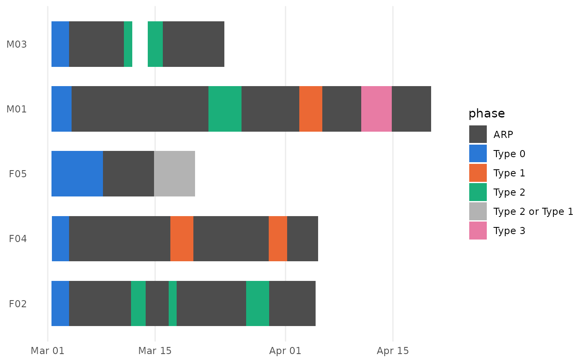
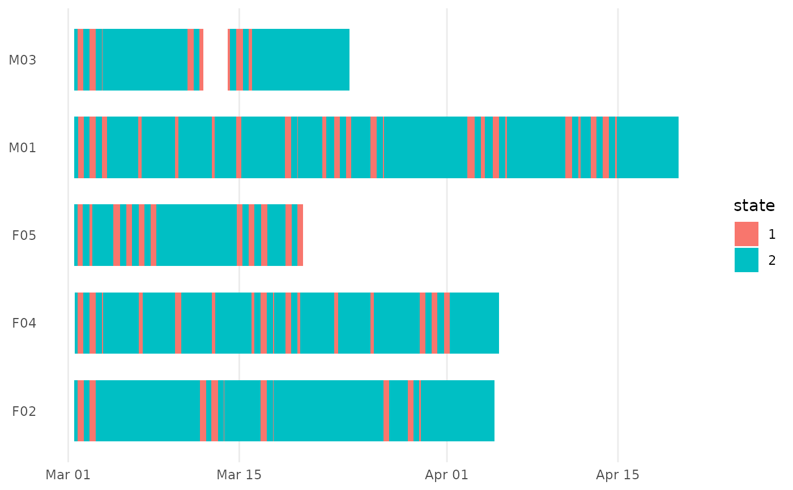

Draws, for each individual, the sequence of movement phases (or any other categorical variable) along time. Each location is drawn as a bar that lasts until the next location, so monitoring gaps appear as empty spaces.
Usage
draw.timeline(
data,
phase.col = "phase",
id.col = "ID",
time.col = "time",
max.gap = 3,
palette = NULL
)Arguments
- data
A data.frame or an object of class
disperseR, usually the output ofclass.mov.- phase.col
Character. Name of the column to display. Default is "phase".
- id.col
Character. Name of the column containing individual identifiers. Default is "ID".
- time.col
Character. Name of the column containing timestamps (POSIXct). Default is "time".
- max.gap
Numeric. Intervals between consecutive locations longer than
max.gaptimes the median interval of the individual are left empty. Default is 3.- palette
Optional named character vector of colours. If
NULL, a default palette is used for thephasecolumn and the defaultggplot2palette otherwise.
Examples
eps <- get.epsilon(sim_states)
#> Computing a global threshold using all data combined.
arp <- get.arp(sim_states, epsilon = eps, delta.days = 2, pct.state1 = 0.2)
mov <- class.mov(link.arp(arp, thres = 24 * 3600))
draw.timeline(mov)

# Behavioural states instead of phases
draw.timeline(sim_states, phase.col = "state")
